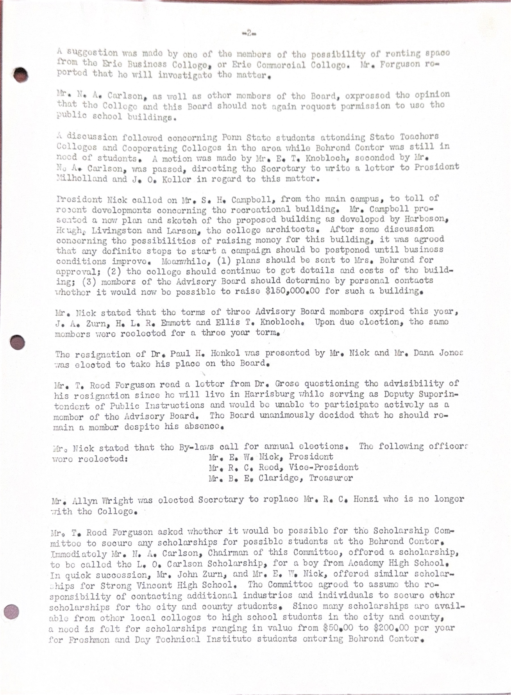
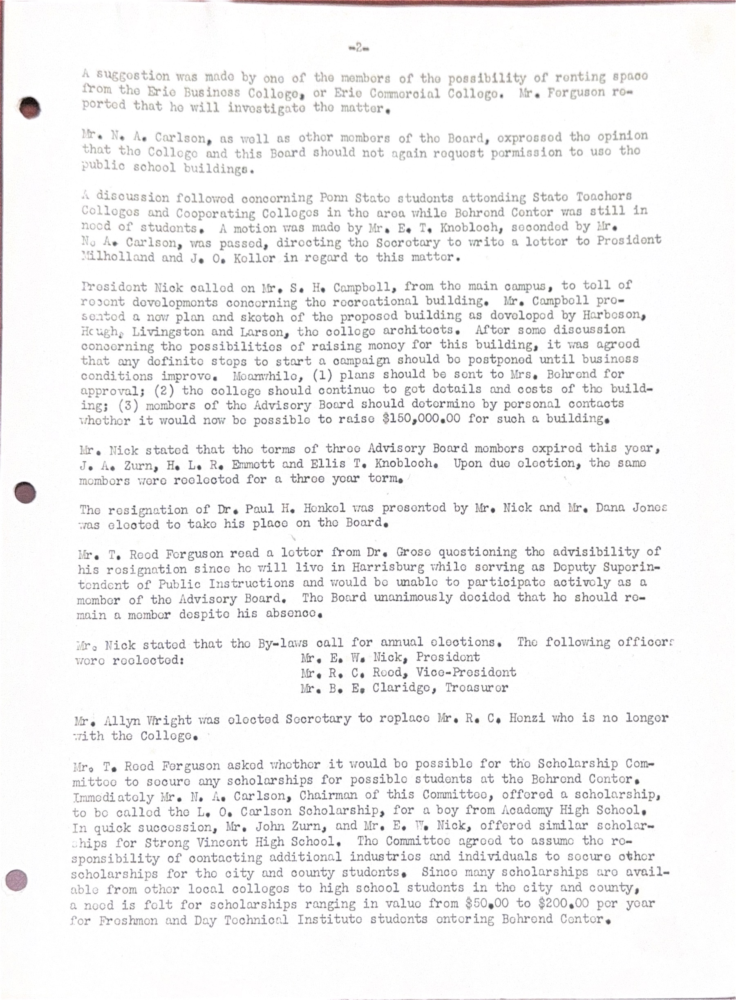

1948-07-28 Advisory Board Meeting
1948-07-28
 

Minutes of the meeting for the Advisory Board for the Pennsylvania State College in Erie.
Time: 4:00 P.M.,July 28,1948
Place: The Behrend Center
Those Members Present:
Mrs. H.C Ogden
Mrs. C.Dean Klahr Mr. Edwin W. Nick Mr. R.C. Reed Mr. Bertram E. Claridge Mr. N.A. Carlson Mr. H.C. Mitchell Mr. G.R. Fryling Mr. Allyn Wright Mr. J.A. Zurn Mr. T.Reed Ferguson Mr. R.C. Henzi
Visitor Present: Mr.E.L. Keller
Members Not Present:Mr. W Pitt Gifford Mrs. Mary B. Behrend Mr. H.L.R. Emmet Dr. C. Herman Grose Mr. Ellis T. Knobloch Mr. J.O. Keller Dr. Paul H. Henkel
Mr. E.W. Nick,President,called the meeting to order. He asked the Secretary to read the minutes of the previous meeting. Mr. Henzi read the minutes of the meeting.A motion to accept the minutes was made by Mr. Claridge and seconded by Mr.Zurn.
Mr. E.W. Nick,President,called the meeting to order. He asked the Secretary to read the minutes of the previous meeting. Mr. Henzi read the minutes of the meeting.A motion to accept the minutes was made by Mr. Claridge and seconded by Mr.Zurn.
Mr. Nick asked the Secretary to mail the minutes of all future meetings to each member of the Board.
Mr. Nick asked Mr. Ferguson,Administrative Head,for a resume of the general situation at the Behrend Center.Mr. Ferguson covered the construction work to date and stated that the work is ahead of scheduele. Mr. Ferguson also brought the Advisory Board members up-to-date on the staff members appointed.
On the matter of publicity,Mr.Ferguson commended the action of some companies in publicizing Behrend College in their company publications. He also stated that both of the local newspapers have been very cooperative.He talked briefly about concerning the Daytime technical Institute and Evening Technical Institute and cautioned that these activities not be overlooked as they are an integral part of the college program.Mention was made of the fact that new quarters would have to be found for the Evening Technical Institute.
Mr. Nick suggested that the Board give encouragement to responsible organizations and civic groups to use the Behrend College facillities.
Mr. Nick asked for a general discussion on the changing of the name of the Behrend Center.Mr. E.L. Keller suggested that one means might be for the Advisory Board to formally petition the Board of Trustees of the College for this change. It was pointed out that "Center" was the word used in the agreement between Mrs. Behrend and the College Trustees. At this juncture,Mr. Nick suggested that
this terminology was only used as a matter of convience,and that Mrs. Behrend definitley wanted the name to be Behrend College,if that was at all possible. Some of the reason for changing the name to "College" are: (1) A matter of pride among the students in attending a college rather than a Center. (2) There are a number of institutions that use the word "Center" in their titles,thus leading to posdible confusion.(3) The natural couse of events might well be that the Pennsylvania State College will become a university,in which case "Behrend College" would be a logical name. Other views were offfered by members of the Board.
It was moved by Mr. Fryling that the Erie branch be called "Behrend College" . This was seconded by Mr. Carlson and the motion was passed. It was agreed that the President of the Advisory Board write a letter to the Board of Trustees listing these valid reasons for this recommendation. It was further suggested that a letter from Mrs.Behrend also be sent to the Board of Trustees on the matter.
The following night letter was sent to President Millholland that this petition could be sent to the Board of Trustees at their meeting at State College,Friday,July 30th.
"ADVISORY BOARD AT BEHREND CENTER AFTER LENGTHY DICUSSION REQUEST CONSIDERATION BE GIVEN TO CHANGING NAME OF COLLEGE BRANCH IN ERIE TO BEHREND COLLEGE STOP ALL BOARD MEMBERS UNANIMOUS IN THIS REQUEST STOP SHE IS WRITING TRUSTEES TO THIS EFFECT E W NICK PRESIDENT ADVISORY BOARD"
A more detailed letter was also to be mailed to President Milholland on this matter.(copy attached)
A general discussion was held on the dedication set for September 11,1948,Saturday Afternoon.The president of the advisory board suggested the Judge Hirt be asked to give the acceptance speech in the name of the community.This suggestion was made as a motion by Mr.Zurn and seconded by Mr.Claridge. It was further suggested that Reverend Gearhart be asked to give the opening prayer.It was agreed to send personal invitations to all High School Principals in Erie County and to the Presidents of Colleges in the Erie area.
Mr. Nick asked Mr. Keller for information on the enrollment for the first semester.Mr. Keller stated that there would be at least 150 students and 30 of these will be girls who will live on the Behrend campus in the second floor of the residence.This area will be made over into dormitory space.
Mr. Robert Reed suggested that pieces of promotional materials at the plants be made available.Mr. Allyn Wright endorsed this heartily.Mr.Ferguson agreed to have this material placed in theirhands. He will have a quantity printed for use in various plants.
A short discussion was held on the need for pianos at the center. The Advisory Board members were asked to do what they could toward securing these instruments.
The meeting adjourned at 5:25 P.M.
R.C. Henzi Secretary
RCH:ci